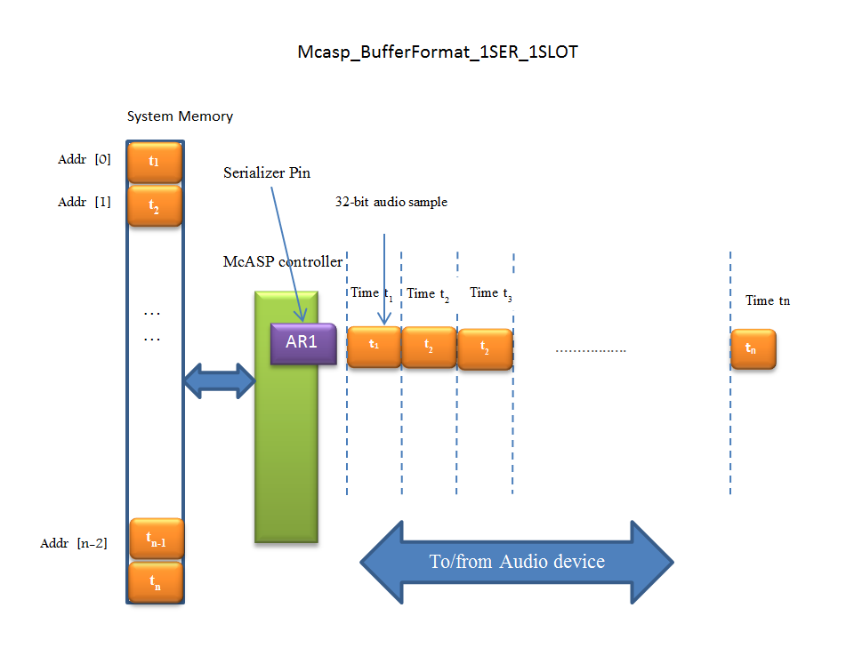
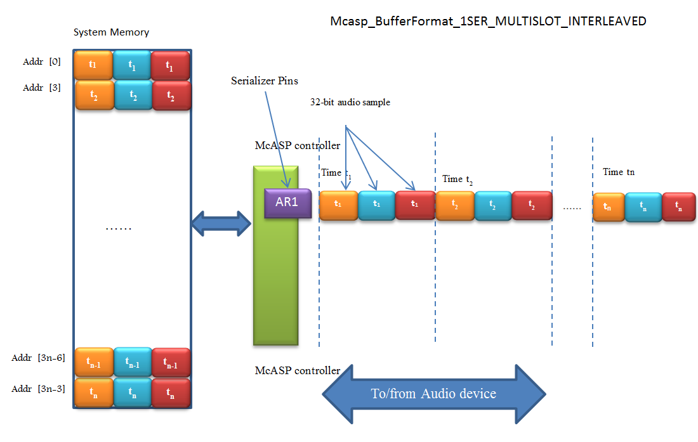
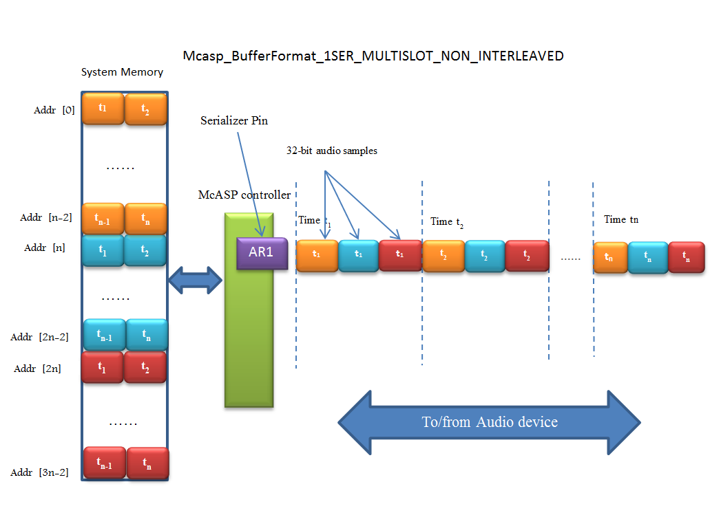
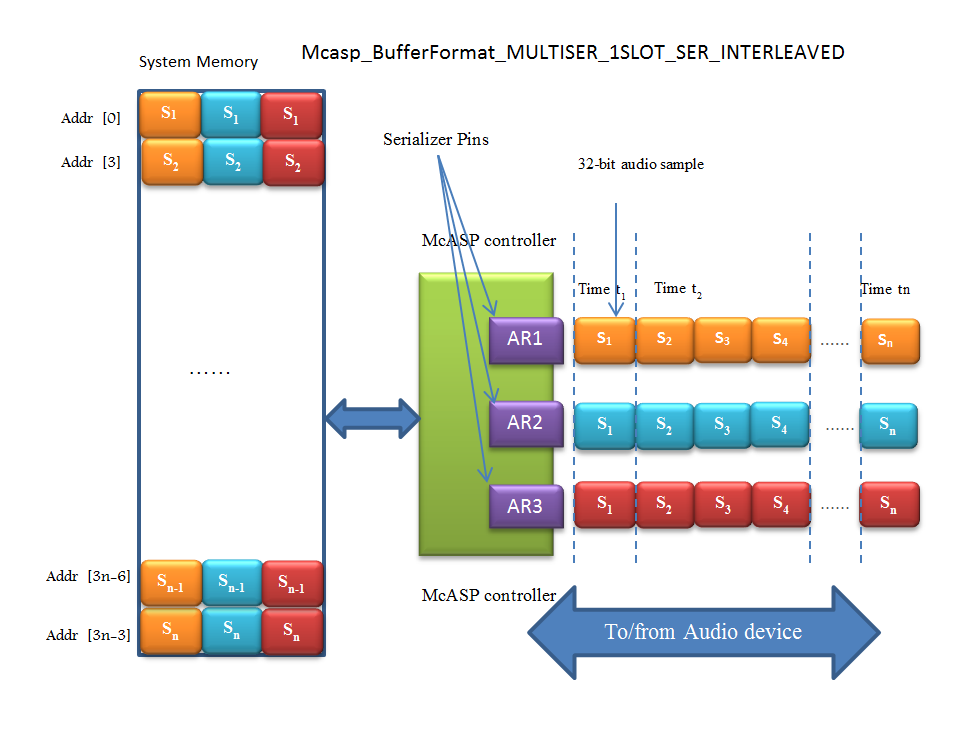
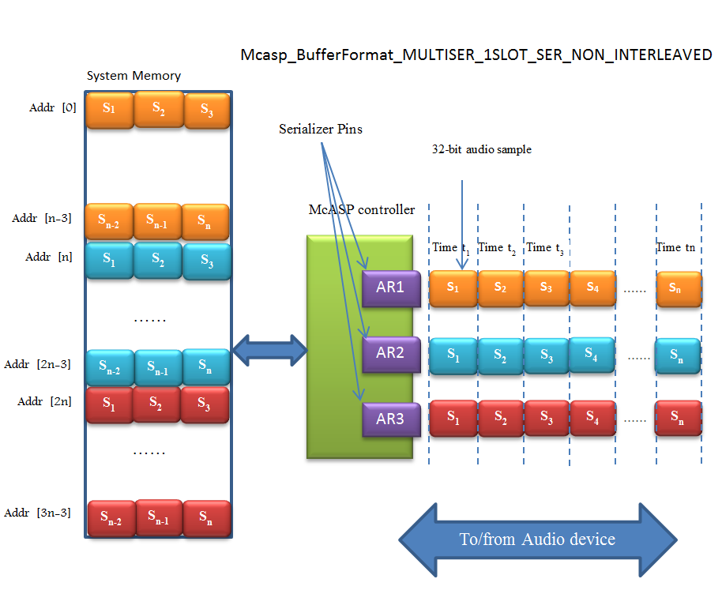
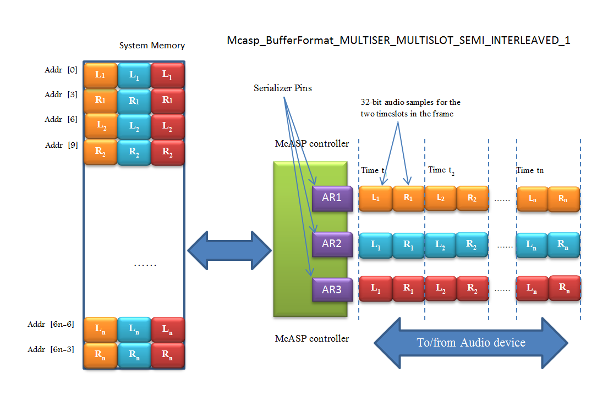
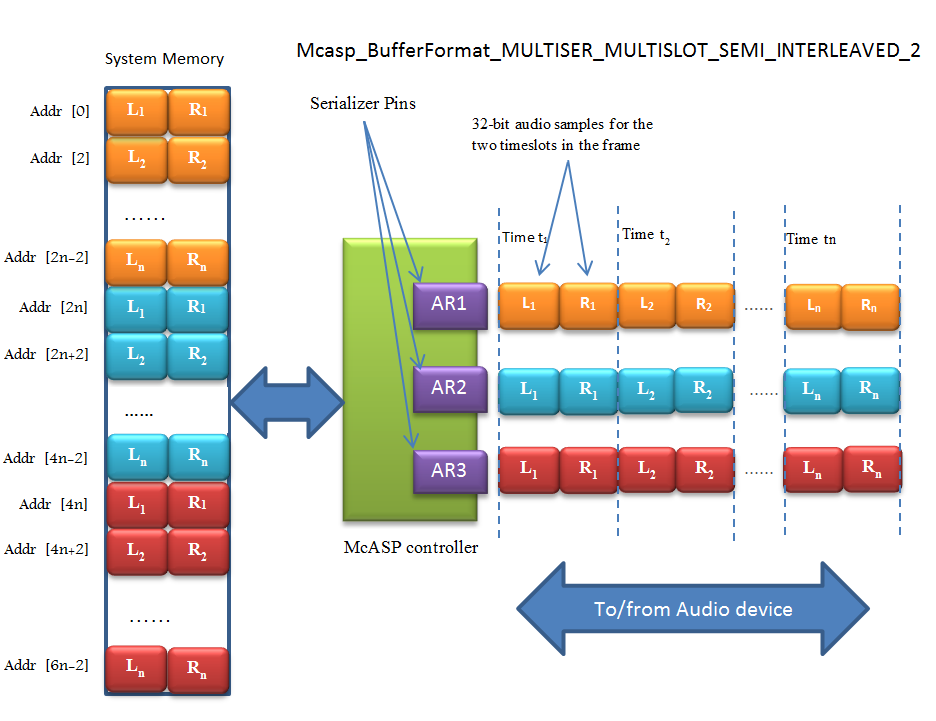
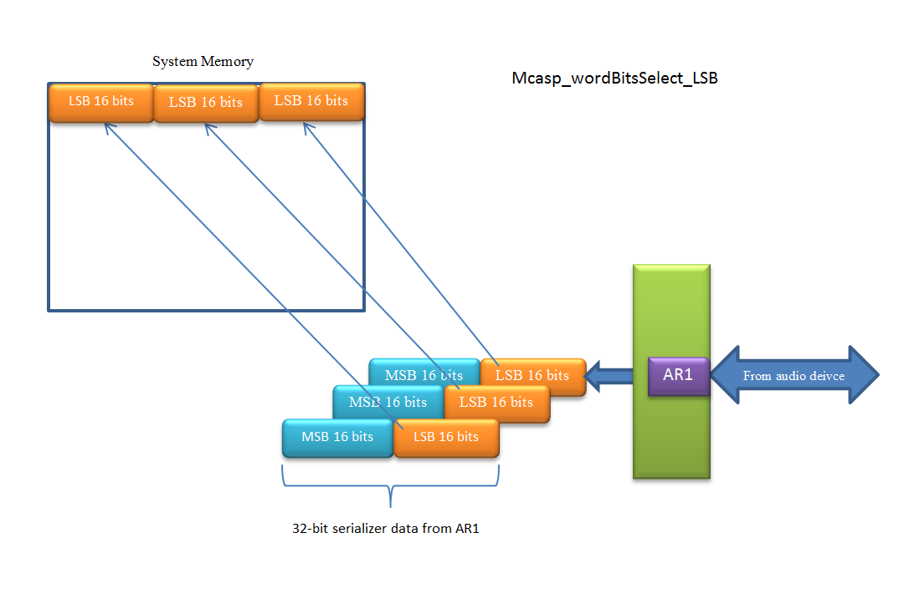
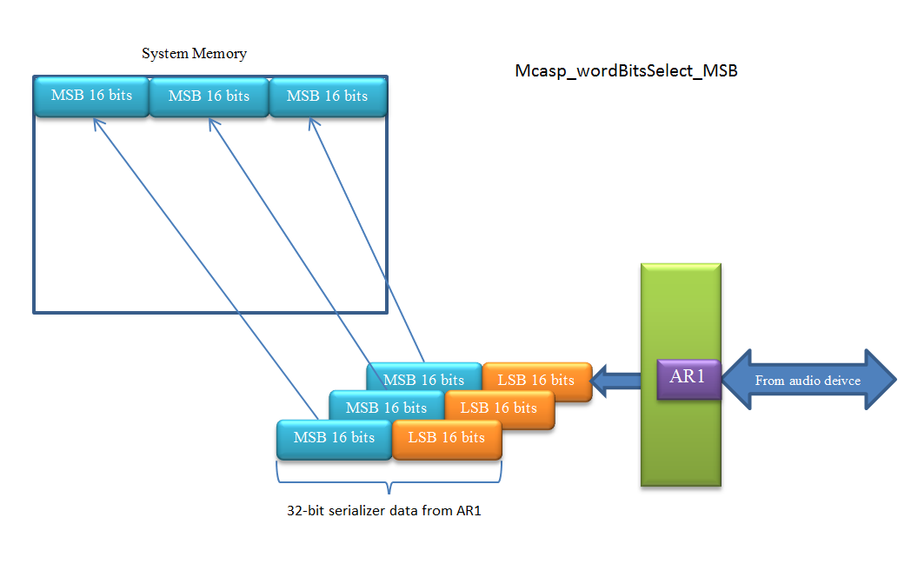

4.13. McASP¶
4.13.1. Introduction¶
The multichannel audio serial port (McASP) functions as a general-purpose audio serial port optimized for the needs of multichannel audio applications. The McASP is useful for time-division multiplexed (TDM) stream, Inter-Integrated Sound (I2S) protocols, and intercomponent digital audio interface transmission (DIT).The multichannel buffered serial port (McASP) peripheral allows direct interface to other TI DSPs, codecs, and other devices in a system. The following sub sections explain the hardware (McASP peripheral) and software context of the McASP LLD.
The device driver exposes a set of well-defined APIs which are used by the application layer to send and receive data via the McASP peripheral. The driver also exposes a set of well-defined OS abstraction APIs which are used to ensure that the driver is OS independent and portable. The McASP driver uses the CSL McASP register layer for all McASP MMR access. The McASP driver also interfaces with the EDMA3/UDMA library to be able to transfer data to and from McASP peripheral and data memory.
4.13.2. User Interface¶
4.13.2.1. Driver Configuration¶
The McASP driver provides a sample implementation sequence which initializes the MCASP IP block. The McASP Device initialization API is implemented as a sample prototype:
void McaspDevice_init (void)
The function initializes all the instance specific information like base address of instance CFG registers, FIFO address for the instance, TX and RX CPU event numbers, TX and RX EDMA event numbers etc.
int32_t Mcasp_socGetInitCfg(uint32_t index, Mcasp_HwInfo *cfg)
The function obtains the soc configuration parameters such as interrupt numbers, mux configuration parameters etc.
int32_t Mcasp_socSetInitCfg(uint32_t index, const Mcasp_HwInfo *cfg)
The function set the soc configuration parameters such as interrupt numbers, mux configuration parameters etc.
For details about individual fields of this library structure, see the PDK doxygen documentation
4.13.2.2. APIs¶
Refer to below API files:
#include <ti/drv/mcasp/mcasp_drv.h>
#include <ti/drv/mcasp/soc/mcasp_soc.h>
McASP Buffer formats
The McASP driver provides various buffer formats for sending the data to/from the audio device. The differences between these formats arise from the way the audio samples are collected from various serializers and their timeslots and arranged in the system’s memory. This way the application can choose to run audio processing algorithms over the data without the need for re-arranging those data every frame. The buffer format is provided in the Mcasp_ChanParams.dataFormat in the form of Mcasp_BufferFormat defined in mcasp_drv.h The below section provides an overview of the various formats. In the explanatory diagrams in each section, McASP controller recieves samples in frame intervals denoted by t1,t2..tn. The McASP driver collects these and arranges those samples in the memory in various formats in to the host’s System memory. We have chosen 32 bit samples and 32-bit word addresses throughout for simplicity.
Mcasp_BufferFormat_1SER_1SLOT
This is applicable if only one serializer and one timeslot is used. The samples are ordered in the order they received or sent.
Mcasp_BufferFormat_1SER_MULTISLOT_INTERLEAVED
This is applicable if multiple slots are used with one serializer. The samples from the different timeslots are stored interleaved in the memory as below. Different timeslots’ samples are denoted by different colors and are labelled t1,t2..tn according to the time they arrive at the serializer.
Mcasp_BufferFormat_1SER_MULTISLOT_NON_INTERLEAVED
This is applicable if multiple slots are used with one serializer. The samples from the different timeslots are grouped together on the basis of the timeslot and stored in the memory as shown below. Different timeslots’ samples are denoted by different colors and are labelled t1,t2..tn according to the time they arrive at the serializer.
NOTE: if the non-interleaved format is used, the Mcasp_ChanParams-> hwFifoEventDMARatio must be set to 1.
Mcasp_BufferFormat_MULTISER_1SLOT_SER_INTERLEAVED
This is applicable if multiple serializers are used with one time slot is used for each of the serializers. The samples from the different serializers are stored in the memory in interleaved fashion as shown below Different serializers’ samples are denoted by different colors and are labelled S1,S2..Sn according to the time they arrive at the serializer.
Mcasp_BufferFormat_MULTISER_1SLOT_SER_NON_INTERLEAVED
This is applicable if multiple serializers are used with one timeslots each per serializer. The samples from the different timeslots are grouped together on the basis of the serializer and stored in the memory as shown below Different serializers’ samples are denoted by different colors and are labelled S1,S2..Sn according to the time they arrive at the serializer.
Mcasp_BufferFormat_MULTISER_MULTISLOT_SEMI_INTERLEAVED_1
This is applicable if multiple serializers are used and each serializer containing multiple timeslots. The samples are stored in the memory interleaved based on serializer and timeslots as shown below. In this example, there are 3 serializers and 2 timeslots per serializers whose samples are noted by Ln (left) and Rn (right). Different serializers’ samples are denoted by different colors.
Mcasp_BufferFormat_MULTISER_MULTISLOT_SEMI_INTERLEAVED_2
This is applicable if multiple serializers are used and each serializer containing multiple timeslots. The samples are grouped based on the serializer and within one serializer, the timeslots are interleaved as shown below. In this example, there are 3 serializers and 2 timeslots per serializers whose samples are noted by Ln (left) and Rn (right).Different serializers’ samples are denoted by different colors.
NOTE: if the non-interleaved format is used, the Mcasp_ChanParams-> hwFifoEventDMARatio must be set to 1.
Mcasp WordBits Selection
With all the frame formats explained above, there is an option to choose which bits to pack from the 32-bit serializer data obtained from/to the McASP serializer, when the word size is less than the slot size. This option is exercised by setting the Mcasp_chanParams->wordBitsSelect to Mcasp_wordBitsSelect_LSB/Mcasp_wordBitsSelect_MSB.
If the default Mcasp_wordBitsSelect_LSB option is selected, the LSBs are packed in to the system memory.
Below is an example of word size = 16bits and slot size = 32 bits and the Mcasp_wordBitsSelect_LSB option is used. On the receiving side, the serializer holds the 32 bit data whose LSB 16 bits are picked up and packed in to the system memory. The MSB 16 bits are ignored.
If the Mcasp_wordBitsSelect_MSB option is used, the serializer’s MSB-16bits are packed in to the system memory. The LSBs are ignored.
Priming
Applications using McASP driver often might send/receive one or two transfers via McASP before sending the application data in/out of McASP through the driver. This would internally set up transfer request queues so that the application can seamlessly send/receive data without the possibility of underrun. This process, a.k.a priming is used in the example application provided with the Processor SDK. In this example two frames are sent/received prior to submitting the application’s audio data to the McASP driver. The number of transfer requests to prime is application dependent and some applications where there may be a lot of delay between transfer requests, enough to cause an underrun, the priming factor could be higher.
4.13.3. Application¶
4.13.3.1. Examples & Unit tests¶
Name |
Description
|
Expected Results
|
SOCs |
Build type |
|---|---|---|---|---|
Audio_ExampleProject |
Example
demonstrating
sample McASP
loopback using AIC31
codec. Reference example
for developers
|
Audio sent in to
the EVM being
played out via the
stereo output of
the EVM
|
AM335X AM437x AM572x K2G OMAPL137 OMAPL138 |
CCS Project |
Audio_SMP_ExampleProject |
Example
demonstrating
sample McASP
loopback using AIC31
codec. Reference example
for developers with SMP
enabled.(A15 core only)
|
Audio sent in to
the EVM being
played out via the
stereo output of
the EVM
|
AM572x- EVM |
CCS Project |
DeviceLoopback_ExampleProject |
Example
demonstrating
sample McASP device
loopback .
Reference example
for developers
|
Digital ramp
pattern sent to
McASP and getting
looped back
internally using
device loopback
|
AM335X AM437x AM571x AM572x AM574x K2G |
CCS Project |
AudioEQ_ExampleProject |
Example
demonstrating
stereo audio
using biquad
filters . Reference
design for
developers. TI
Design Guide:
TIDEP0069
|
Three band
Equalization of
stereo channel
filters with gain
control using
serial console
inputs
|
AM572x K2G |
CCS Project |
DeviceLoopback_TestApp |
Unit test
demonstrating
sample McASP device
loopback .
|
Digital ramp
pattern sent to
McASP and getting
looped back
|
AM65x J721e J7200 |
Makefile |
DeviceLoopback_SMP_TestApp |
Unit test
demonstrating
sample McASP device
loopback with SMP
enabled (A53 core only).
|
Digital ramp
pattern sent to
McASP and getting
looped back
|
AM65x |
Makefile |
DeviceLoopback_Regression_TestApp |
Regression unit test
which tests various
features/configurations
of the MCASP driver
This is a menu based
test application
|
Menu Driven test
sending digital ramp
and getting looped
back in various
configurations
|
AM65x |
Makefile |
Introduction
The sample application demonstrates the use of the MCASP driver for audio playback. The application uses McASP LLD, and programs the AIC codec on the EVM to send and receive the audio input. The audio received from the AIC codec is loop back-ed at the application and sent back to the AIC codec via MCASP LLD.
Audio test setup
Please ensure the below before running the demo
Connect the EVMs stereo audio input to the PCs stereo audio output
Connect the EVMs stereo audio output to powered speakers. Please make sure the amplification on the speakers is high enough for the audio output to be heard
Building and running the Example
Run pdkProjectCreate to create the MCASP_Audio_<evm>_<device>ExampleProject
Load the project on to CCS and build the same.
Build the example
Load the MCASP_Audio_<evm>_<device>ExampleProject
Run the example
Testing the example
Play an audio file on the PC.
You should be able to hear the same audio on the speakers connected to the EVM. It is the PCs audio output which is loop backed at the EVMs MCASP example outputted to the speakers.
NOTE: Please make sure the speakers output volume is high enough for the audio to be audible.